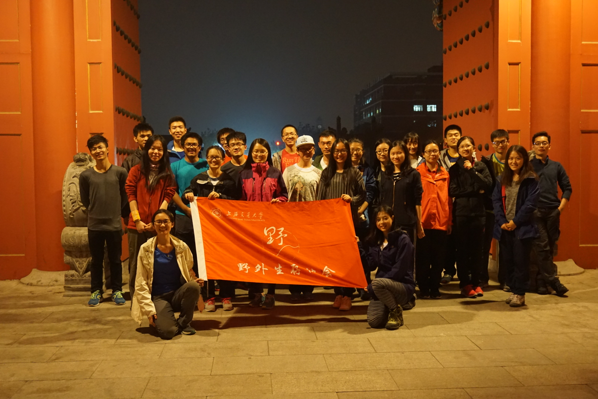
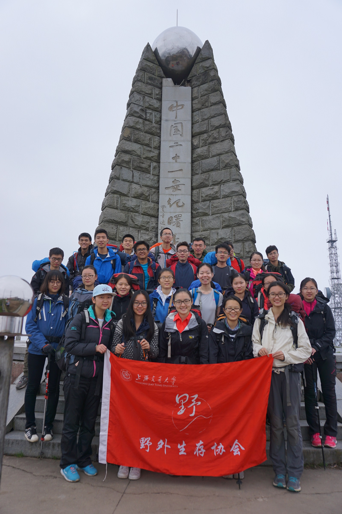

发信人: WiniM(WiniM), 信区: outdoor
标 题: Re: 201611-括苍山领队总结-wy
发信站: 饮水思源 (2016年12月01日16:26:57 星期四)
上图
 screen.width - 200){this.width = screen.width - 200}">
 screen.width - 200){this.width = screen.width - 200}">
【 在 WiniM 的大作中提到: 】
: 第一次当会员线领队，感觉比当太白的领队虚，我也不知道为什么
: 全队26个人，领队组五个人：我，压队zyf，副领zzd，队记yssn，还有强行拉进领队组当财务的君姐
: 除领队组外分为四组，组长全部由新干事担任，每个组里有一位老人
: 男女比例11:15。。约2:3。。。我还没见过妹子这么多的线路啊卧槽。。一直想着要不是这是括苍山，这线就不能开了
: 大概行程：第零天晚上到黄石坦村的水泥地上扎营；第一天由九台沟景区上山，下午两点到山顶扎营；第二天经阵车村下山，下午一点多到黄石坦村农家吃饭。
: 线路强度：第一天台阶路爬升较平常走的山路快很多，由于是台阶路，不太觉得累（有个妹子走得较慢，所以全队都走得比较慢）；后来是公路+横穿公路的山路（较陡），爬升不是很多，但走得比较久，也不知道为什么很多人都走虚了。第二天下山速度不算很快，强度不大。
: 线路难度：第一天上山台阶路没有难度。后来的横穿公路的山路比较陡，相应的难度也比较大（对于第一次出线的队员来说是第一次走山路，也走得比较慢）。第二天下山，那段横穿公路的山路，我都选择走公路下，绕得比较远，速度较快；公路岔路口到阵车村之间的山路不太陡，但是滑，新人害怕，走得较慢；阵车村里面的大石头路高程下降得比较多，难度不大；阵车村之后是沿着峡谷走，难点稍多，高程下降较少。
: 这条线在准备阶段就很曲折。。。首先是确定了第十周周末开两条会员线，还有一条探路线。探路线距离括苍山比较近，所以会员线定的是括苍山（正好之前和zyf说起来想去括苍山放帐篷）。结果发现另一条会员线找不到压队，然后就打算并到括苍山开一条大队伍会员线，再后来发现一条会员线的人都找不齐（探路队伍本来五个人后来剩两个人也不去了）（md，大二的在干什么啊，没人当领队呢，摔！）……直到周日报名的人（包括领队组）只有25个人，后来算了一下发现这条线可以开，周一发现有27个人报名，觉得这条线可以开了，就高高兴兴地过生日: 去了。然而周二发现有6个人跳飞机（包括下周有考试的pyh），就只剩21个人，很无奈地准备取消线路。这时候压队说先不取消，万一能拉到人呢。后来在压队的鼓励下我们拉到了25个人，准备会上秒加了一个人（一个人准备会上跟我说有一个朋友想来参加，其实这样加人是不允许的，只是这次人数实在太少所以准了），总共26人。（准备会上跟所有队员说明如果之后有事情去不了，一些费用是不退的）准备会之后没有一个人跳飞机，太感动了
: 后来就是准备会。再次要作自我检讨，准备会之前一小时才认真想想准备会要讲什么，而且是第一次当会员线领队，很多东西都漏了讲，但是写道了队员告知单里面。然后讲到一半的时候！刚想说拿起你们手中的队员告知单！才发现副领没有将队员告知单发下去！由于zzd是第二次当副领队，这个问题就没跟他提，其实这些东西都应该早点跟他确认一下。本来是打算准备会之后把阻止留下来一下讲一下注意事项（都是干事，讲一下还是很有用的），后来忘了TAT
: 其实准备会要讲的东西，除了线路不同安排不一样之外，很多东西是要跟他们讲的，比如说（对第一次出线的人）着装，队伍意识，环保意识等等，都是大同小异的。这些内容可以写出一个准备会要讲的东西，以免以后的领队遗漏一些要点（因为领队对准备会的印象，也就是对之前出过的线的印象，要讲的东西很多都是参考以前出的线路，特别是经验较少的领队，这是一个一届一届传下去的过程。所以如果准备会上讲的东西越来越少的话，以后协会的准备会就会遗漏很多内容了。
: 后来就是出发之后的事情了。很欢快的就上了车，然后发现！在自我介绍的时候黑我！什么鬼啦！大一的那些事情劳资都快忘了啊啊啊！后来没有玩游戏是因为忘记准备了，考虑到车程可能较长就没组织游戏。
: 队员时间观念问题是在庙门拍照的时候，叫了大家几声都没几个人出来拍照，我也只能怪我没在准备会上强调，也没交代各位组长和老人，老人也不太给力吧……后来君姐在车上说了一下这个问题，感觉之后好一些吧。第一天早上拔营时间上没太大问题，万万没想到我自己东西收好了之后去各组催他们快点，最慢的是领队组！摔！大家都上好包了领队组还有一升牛奶和很多东西在台子上还没收拾，后来大家等了领队组几分钟吧，才出发（怪我怪我怪我 没有跟队记财务压队副领他们提前说好谁要收什么东西）。再后来也就是休息的时候的问题了，我是在中午: 的时候发现大家习惯不下包休息的时候一屁股坐地上不起来，最后总结的时候才听君姐说是压队带的节奏= =第二天拔营时间还行，准备会已经讲过早餐尽量简单，晚上也交代过早餐比较复杂的组早点起床做饭，但是！问题在于！山顶农家的厕所！只有一个！好多好多人排队啊！后来出发还是晚了几分钟。下山还是遇到一屁股坐地上不起来的问题。其实各种休息的时候都是会晚几分钟出发，可能是我脸不够黑吧。。。
: 在第一天晚上，大家都做好晚饭吃完之后，有两个人离开了两个小时，进帐篷睡觉之前组长才跟领队组说。后来副领和压队去找人，发现两个人在荡秋千……这个也是一个会导致严重后果的问题，虽然在准备会上讲过，但是没有太强调。
: 这次请的向导是请计师傅帮忙找的一家，他们家在山上，离山顶有一定距离，叫避暑山庄。事实上如果不是那里离山顶太远，在那边扎营还是挺好的，那边地也比较平，据说风不大。向导人很好，很朴实的一个山里人的感觉，但是很严重的一个问题就是向导的普通话非常不好，我可能只能听懂10%。。。导致第二天下山时与向导路线上有分歧，是因为向导误解了我的意思了。其实可以打印google earth的地图，那样给向导看或许他能看得懂（很久之前的提议了啊啊啊……）。
: 附一下括苍山的线路情况：
: 括苍山有至少五条徒步路线能到山顶：黄石坦村经九台沟景区、黄石坦村经阵车村、东方村（东長梘村）、括苍水库、大岙村。这次选择的上山路是黄石坦村经九台沟景区（协会以前两次括苍山都是这边上山），下山路是经阵车村到黄石坦村。在准备的初期打算不请向导（后来压队说会员线要有向导就请一个）。备选路线考虑过括苍水库上山（看攻略好像有难点，一开始找的向导说没走过），东方村下山（看攻略也有难点，而且有一个地方路可能会比较难找）。就舍弃了这两条路线，还有一个原因是黄石坦村海拔较高，近450m，总的强度较小（其他进山口�: 拔都不�50m（印象中是这样的））。
: 这次上山路况如下：
: (以下引言省略...)
--
行诸山野 立命天地
※ 来源:·饮水思源 bbs.sjtu.edu.cn·[FROM: 211.80.54.209]
|